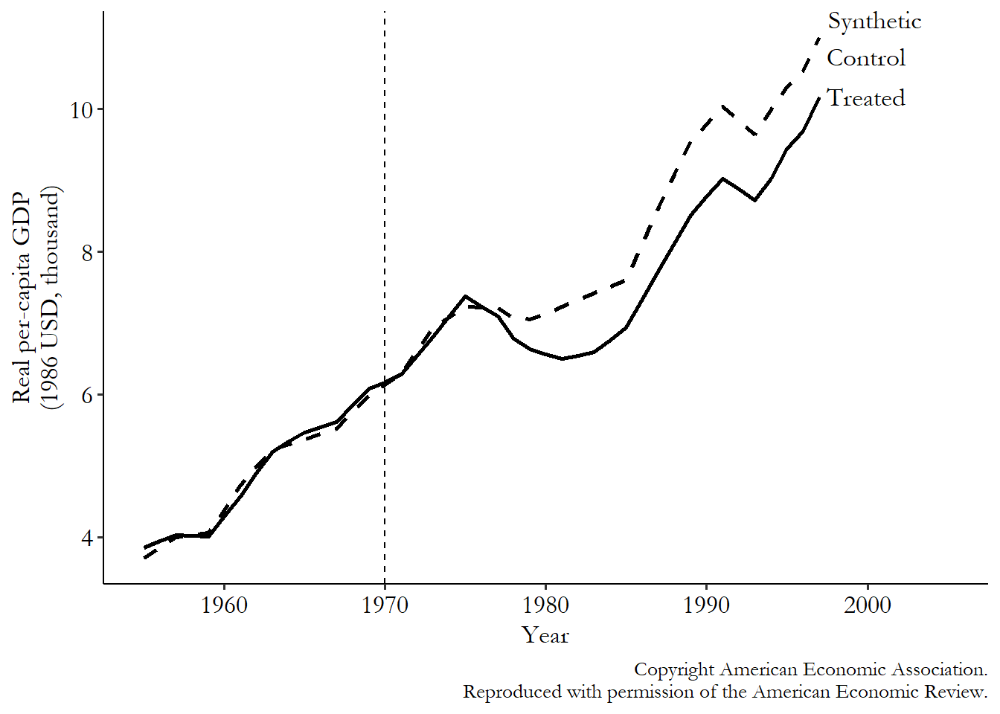

Methods #5: Other#
Executive summary
There are lots of causal inference methods that I have yet to explore! This page lists some of them, and goes into detail on a few.
SHAP - marginal, conditional, causal
Synthetic control - compare outcomes of treated and untreated group - but weight the untreated group based on matching algorithm that assigned weights based on pre-treatment data
This page details other methods that either don’t fit into the prior three categories - or, that I have not realised would have fit into one of the prior categories!
List of methods not yet explored#
SHAP variants#
(Minimal notes)
There are:
Marginal SHAP values
Conditional SHAP values - SHAP values are usually symmetric, with no causal knowledge incorporated into their calculation. However, Frye et al. 2021(https://doi.org/10.48550/arXiv.1910.06358) proposed asymmetric Shapley values, which incorporate prior knowledge into the calculation. They ‘can be tuned by the researcher to avoid splitting the Shapley feature effects uniformaly across related/correlated features - as is done in the symmetric case - and focus on the unique effect of a target feature after having conditioned on other pre-specified “causal” feature effects’.[source]
Synthetic control#
Synthetic control was popularised in Abadie, Diamond, and Hainmueller (2010). It’s similar to difference-in-differences, although less popular, and requires access to lots of pre-treatment data (‘otherwise the matching quality, or at least your ability to check match quality, will get iffy’)
Steps:
Get ‘treated group and “donor set” of potential control groups’
Matching algorithm assigns weights to each of the potential controls based on pre-treatment data. ‘These weights are designed such that the time trend of the outcome for the treated group should be almost exactly the same as the time trend of the outcome for the weighted average of the control group (the “synthetic control” group).’
Compare outcomes after treatment
Explanation and image from [The Effect: An Introduction to Research Design and Causality - Nick Huntington-Klein]

Comparison to difference-in-differences#
It begins similar to difference-in-differences, but you ‘use data from the pre-treatment period to adjust for differences between the treatment and control groups, and then see how they differ after treatment goes into effect. The post-treatment difference, adjusting for pre-treatment differences, is your effect’.
So it differs from difference-in-differences as:
Pre-treatment different adjustment done with matching (rather than regression like DID), and the matching aims to eliminate prior differences (unlike DiD, where trying to account for propensity of treatment)
‘Relies on long period of pre-treatment data’
‘After matching, the treated and control groups should have basically no pre-treatment differences. This is often accomplished by including the outcome variable as a matching variable’
‘Statistical significance is generally not determined by figuring out the sampling distribution of our estimation method beforehand, but rather by “randomization inference,” a method of using placebo tests to estimate a null distribution we can compare our real estimate to’
[The Effect: An Introduction to Research Design and Causality - Nick Huntington-Klein]
Methods identified outside causal inference literature#
Important note: These are not approaches that haved turned up in the causal inference literature, but instead, that I have come across in the context of dealing with a treatment paradox. They will be related to causal inference - I haven’t thought through how. I would advice caution - these are largely not recommended methods for causal inference.
Use treatment as the outcome#
Cheong-See et al. 2016 propose that, when starting a treatment is likely to prevent an adverse outcome, those who received the treatment could also be considered to have experienced the outcome. For example, ‘in women with early-onset pre-eclampsia, if a large proportion of women are delivered at an early preterm gestation (before 34 weeks), then delivery itself could be considered as an outcome (replacing complications that would have occurred in the absence of delivery). In the absence of a standardised protocol for decision to deliver at early preterm gestation, such an approach could help to overcome the limitations in the model as a result of delivery preventing the occurrence of an adverse outcome.’[Cheong-See et al. 2016]
The existence of fully standardised care with no variation in treatment (or variation that you can account for)#
This is a scenario where there is complete collinearity between the predictor and the treatment, where the presence of a particular predictor will always guarantee the presence of a particular treatment.
However, that requires no variation in treatment - that the same medications and dosages are always provided at the same treatment thresholds at the same times. This is not realistic. With the example of management of early-onset pre-eclampsia, such as the commencement of anti-hypertensives and magnesium sulphate, this is somewhat standardised by guidelines [e.g. from the National Institute for Health and Care Excellence (NICE) in the UK], but the threshold for commencing treatment varies between clinicians and centres. Furthermore, the response from a specific antihypertensive and dosage varies between individual patients.
This limits the applicability of such a strategy, although one could consider the use of multilevel models to allow for any differences between clinicians and treatment centres.’[Cheong-See et al. 2016]
Steer 2016 comments that ‘such models rarely take into account all of the relevant factors (e.g. the coexistence of a modulating pathology such as an autoimmune disorder) or the social and emotional circumstances and preferences of the mother and her family.’[Steer 2016]
Predictor substition#
You could remove all the predictors upon which the decision to treat is based on, and substitute them with alternative predictors.
Limitations:
Can prevent you from including meaningful predictors in the model
Other predictors may be correlated with the predictors used to make treatment decisions.
Incorporation of treatment as a predictor in the model#
Another method is to include treatment use as a predictor in the prognostic model.[Pajouheshnia et al. 2017][Schuit et al. 2013] In practice, you won’t be able to input “they have been treated or not” for the as-yet untreated patients - but you could use the model to estimate outcomes in scenarios where they are or are not treated.[Pajouheshnia et al. 2017]
You could just add the indicator on top of the prognostic model, keeping the original coefficients fixed.[Pajouheshnia et al. 2017] However, if there is an interaction between the effectiveness of treatment and having a predictor (e.g. more effective in those with predictor), then the model will need to account for/incorporate this interaction.[Schuit et al. 2013] Instead therefore, the model could be entirely refitted with the addition of an indicator term for treatment, with the inclusion of interaction terms where anticipated.[Pajouheshnia et al. 2017]
Limitations:
Failure to correctly specify any interactions between treatment and other predictors in the validation set could mean that the effects of treatment are not completely taken into account[Pajouheshnia et al. 2017]
The addition of a term for treatment to the model that is to be validated may improve the performance beyond that of the original model due to the inclusion of additional predictive information[Pajouheshnia et al. 2017]
Not possible if everyone in the study had the same intervention (but in that case, it is likely that unexpected findings are not due to a treatment paradox)[Schuit et al. 2013]
With this approach, ‘differentiating treatment from predictor effects becomes difficult. We could adjust for the interaction between ‘decision to treat’ as a predictor and each of the other prognostic factors in the model; however, when many predictors are involved, or when ‘decision to treat’ is based on multiple predictors, this approach becomes complex. In such situations, extremely large sample sizes are needed for the reliable assessment of interactions.’[Cheong-See et al. 2016]
Due to the limitations, Pajouheshnia et al. 2017 do not recommend this approach.[Pajouheshnia et al. 2017]
Recalibration#
Don’t yet understand: ‘The incidence of the predicted outcome may vary between development and validation data sets. If this is the case, the predictions made by the model will not, on average, match the outcome incidence in the validation data set [22]. As discussed in section 2.1, use of an effective treatment in a validation data set will lead to fewer outcome events and thus a lower incidence than there would have been had the validation set remained untreated. One approach to account for this would be to recalibrate the original model using the partially treated validation data set. In a logistic regression model, a derivative of the incidence of the outcome is captured by the intercept term in the model, and thus a simple solution would seem to be to re-estimate the model intercept using the validation data set [23, 24]. In doing this, the average predicted risk provided by the recalibrated model should then be equal to the (observed) overall outcome frequency in the validation set. Further details of this procedure are given in Table Table1.1. Where treatment has been randomly allocated, intercept recalibration should indeed account for the risk-lowering effects, provided that the magnitude of the treatment effect does not vary depending on an individual’s risk and thus is constant over the entire predicted probability range. In non-randomized settings, where treatment use by definition is associated with participant characteristics, a simple intercept recalibration is unlikely to be sufficient due to interactions between treatment use and patient characteristics that are predictors in the model. However, although recalibration may seem a suitable solution for modelling the effects of treatment, when applying recalibration, concerns should also be raised over the interpretation of the estimated performance of the model. Differences in outcome incidence between the development data set and validation data set may not be entirely attributable to the effects of treatment use. By recalibrating the model to adjust for differences in treatment use and effects, we simultaneously adjust for differences in case-mix between the development and validation set. As the aim of validation is to evaluate the performance of the original prognostic model, in this case in a treatment-naïve sample, recalibration may actually lead to an optimistic impression of the accuracy of predictions made by the original model in the validation set. For example, if the validation set included individuals with a notably greater prevalence of comorbidities and thus were more likely to develop the outcome, recalibration prior to validation could mask any inadequacies of the model when making predictions in this subset of high-risk individuals.’[Pajouheshnia et al. 2017]
Due to the limitations, Pajouheshnia et al. 2017 do not recommend this approach.[Pajouheshnia et al. 2017]